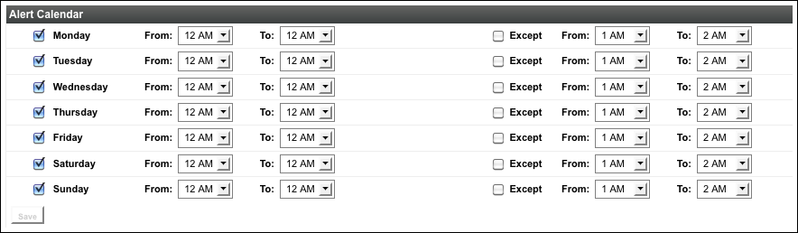

Topics marked with * relate to features available only in vFabric Hyperic.
- Authentication
- User Accounts in Hyperic
- Roles in vFabric Hyperic
This page is an overview of users and roles in VMware vFabric™ Hyperic®.
Authentication
Hyperic Server encrypts user passwords using a encryption key you supply during installation. Note however, that Hyperic Server does not have a strength-of-password policy, or a lockout policy for failed login attempts. Best practice is to integrate Hyperic with your existing enterprise directory. For information about integrating Hyperic with LDAP, Active Directory, and Kerberos, see Configure LDAP Properties and Configure Kerberos Properties.
User Accounts in Hyperic
In Hyperic HQ, a user account specifies the user's name, username, and contact information, including the email and SMS addresses for receiving alert notifications.
In vFabric Hyperic, a user account is also associated with one or more roles, the mechanism by which resource access and associated permissions are granted to users. Note that in vFabric Hyperic, to have access to resources, a user account must be assigned at least one role to which resources are assigned.
Roles are not supported in Hyperic HQ — all users have all permissions to all resources in inventory. Similarly, any Hyperic HQ user has the permission to create other users.
For information about roles, see Roles in vFabric Hyperic.
Built-in Accounts
There is one built-in user account in Hyperic HQ, and two in vFabric Hyperic.
- hqadmin — Both Hyperic HQ and vFabric Hyperic have a built-in hqadmin account, which can administer the Hyperic Server. In vFabric Hyperic, the hqadmin account the has the superuser role, and can, and in addition to permission to administer the Hyperic Servcer, can:
- Assign alert definitions to resource types
- Modify role-based dashboards
- guest — vFabric Hyperic has a built-in guest account, which, when enabled, allows anonymous, view-only access to the Hyperic user interface. The guest user has the built-in guest role. Note that the guest role provides View permissions for all types, but unless resource groups are assigned to the role, anonymous users will not be able to view any resources. To allow anonymous users to view resources in HQ you must enable the guest account and assign the groups of resources you wish to expose to the guest role.

If desired, you can grant the guest role access to all resources without assigning groups to the role. To grant the guest role full access to all resources, insert the following row into the database. Note that there is no user interface that can revert this update – you will must manually remove the row from the database to revert the behavior. INSERT INTO EAM_ROLE_RESOURCE_GROUP_MAP VALUES (2, 1);
User Account Creation and Authentication
Hyperic HQ User Accounts
In Hyperic HQ, you create an account for each user, as described on Create and Manage User Accounts. All Hyperic HQ user account data is stored in Hyperic database.
vFabric Hyperic User Accounts
In vFabric Hyperic, you can create user accounts manually, or you can integrate vFabric Hyperic with an external authentication so that an LDAP user can log on to Hyperic vFabric using LDAP credentials and register as a new Hyperic user.
Note that each user account in vFabric Hyperic must have one or more roles — if you integrate vFabric Hyperic with your authentication system, Hyperic can automatically assign roles to a new Hyperic user, based on the LDAP groups to which the user belongs.
For more information, see Configure LDAP Properties.
Note: If you do not have an authentication system, you can manually create user accounts as described in Create and Manage User Accounts.
Roles in vFabric Hyperic
Available only in vFabric Hyperic
In vFabric Hyperic, every user is assigned one or more roles. Roles enable:
- Access control - A role defines what resources the users added to the role - role users - can access, and the types of operations - view, edit, create, and so on - they can perform on those resources.
- Alert notification - A role with users but no resource groups assigned to it can serve simply as a distribution list for alert notifications. Role-based notification makes it easier to maintain alert definitions, and enables shift-based alert notifications. For around-the-clock operations, you can define multiple roles, with complementary alert calendars that specify when role users are on duty. If you assign the several complementary roles as recipients for the same alert, when the alert fires, HQ will send notifications only to the role with currently active calendar.
- Role-Specific Dashboards - When you create a role, HQ creates a new Dashboard for the role, which you can customize to meet the needs of role users.
The sections below describe the information you define for a role in vFabric Hyperic.
Permission Matrix: Grants Access to Types
The permission matrix for a role defines the level of access that role users have to configurable items in vFabric Hyperic. There are several types of targets to which you can define a permission level:
- User management types - The permission levels to Users and Roles determines what level of access, if any, role users have to view and manage HQ user accounts and HQ roles.
- Inventory resource types - The permission level to inventory types - Platforms, Servers, Services, Groups, and Applications - controls the level of access, if any, role users have to that inventory type. Note: Granting access to an inventory type does not grant access to specific resource instances.
- Escalations - The permission level for Escalations controls the level of access, if any, role users have to view or manage escalations defined for use in alert definitions.
The screenshot below shows the permission matrix you define for a role.

About Permission Levels
You assign one of the following permission levels to each type.
- None - No access at all to instances of the type.
- Read-Only - Allows role users to view instances of the type, but not create, edit, or delete them. For Platforms, Servers, Services, Groups, also enables:
- Read-Only access to alert definitions for the inventory type.
A role with Read-Only permission level does not have permissions to enable/disable/fix/ack alerts or control resources - these capabilities must be explicitly granted.
- Read-Write - Allows role users to view and edit instances of the type, but not create or delete them. For Platforms, Servers, Services, Groups, also gives:
- Full access to alert definitions for the inventory type,
- Permission to manage alerts (enable/disable, fix, acknowledge) for the inventory type.
- Permission to perform supported control operations on resources of the inventory type.
- Full - Allows role users to create, edit, delete, and view instance of the type. For Platforms, Servers, Services, Groups, also gives:
- Full access to alert definitions for the inventory type.
- Permission to manage alerts (enable/disable, fix, acknowledge) for the inventory type.
- Permission to perform supported control operations on resources of the inventory type.
Permission Tips
| Defining a Role's Permission Matrix For roles that:
|
How HQ Validates Platform-Server-Service Permission Level Assignments
vFabric Hyperic does a bottom-up validation of the permission levels a role grants to Platforms, Servers, and Services.
A role with Full access (which enables resource deletion) to an inventory type must have at least Read-Only access to the parent type (if there is one) and Full to the child type (if there is one).
For example, Full access to Servers requires at least Read access to Platforms and Full access to Services.
Groups: Grant Access to Specific Resources
In addition to defining a permission matrix for a role, you assign one or more groups that contain individual resource to the role. (Assigning a group that contains other groups or a group of applications will not grant the role permissions to the resources in the groups or applications.) Together, the permission levels and groups defined in the role determine the specific inventory resources that role users can work with.
If you create a role simply for use in role-based alert notifications, you do not have to assign any resource groups to the role.
Permission levels to Platforms, Servers, Services, Groups, and Applications define the level of access role users have to each of those inventory types. The operations that a role enables for an inventory type apply only to resources that belong to a group assigned to the role. (You cannot assign individual resources to a role, you must create groups of resources, and assign groups to roles.)
For example, the Full permission to Platforms granted by a role may only be exercised on platforms that belong to a group assigned to the role. So, a group assigned to a role may well contain resource types to which the role does not grant access.
You can assign the same resource group to multiple roles, and you can assign the same user to multiple roles. This allows for the fact that different users may need different levels of access to the same resources. For instance, you can create one role for users that need Read-Only access to the members of a resource group, and another for users that need Full permission, and assign the same resource groups to both roles.
Alert Calendar: Enable Shift-Based Notifications
An Alert Calendar is an optional component of a role that builds on the notion of role-based notification. In role-based alert notifications, the notification recipient is a role - notifications are sent to all users with the role. An Alert Calendar for role defines the time periods during a work week that role users are on duty. You can define multiple roles to span the week - each with a different availability calendar, and assign all of the complementary roles as the notification recipients. In this case, Hyperic Server will send alert notifications only to the role that is currently on-duty, based on the alert calendars defined in the roles.
The screenshot below shows the alert calendar you can define for a role.

Built-in Roles
vFabric Hyperic has two built-in roles, which are described in the sections below.
SuperUser
The screenshot below is the permission matrix for the Hyperic SuperUser. The built-in hqadmin account has the SuperUser role.

Guest Role
The screenshot below is the permission matrix for the Hyperic SuperUser. The built-in guest account has the Guest role.

Hyperic Roles and LDAP Groups
If integrate vFabric Hyperic with your LDAP system, you can automatically assign roles to a new user based upon the groups the user is assigned in the LDAP system. For more information, Configure LDAP Properties.